| 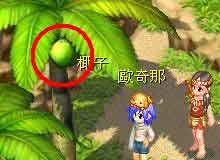 | 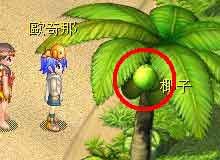 |
| 离开鲁宾逊后的猴子海滩右X542、Y655左X1362、Y915各可拿到─椰子 | |
| 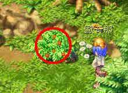 | 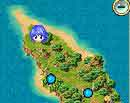 |
| 克兰村北边草丛X1382、Y1375，可以拿到─蔓草、藤蔓、棉花、麻草、杂草 | |
| 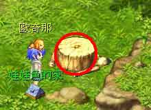 | 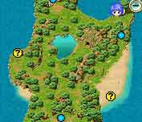 |
| 克兰村南边右上大树旁X4822、Y655，可以拿到─普通木材、柳安木(2) | |
| 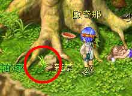 | 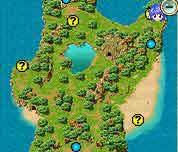 |
| 克兰村南边右上大树旁X5202、Y675，可以拿到─杂草 | |
| 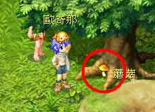 | 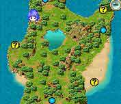 |
| 克兰村南边往左走X1702、Y1055，可以拿到─蘑菇 | |
| 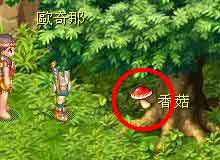 | 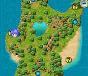 |
| 克兰村南边小红帽右边X1102、Y2395，可以拿到─香菇 | |
| 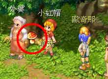 | |
| 克兰村南边小红帽身边X942、Y2395，可以拿到─草菇 | |
| 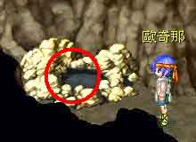 | 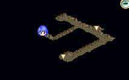 |
| 克兰村内右上矿坑二楼X1922、Y1255，可以拿到─页岩、云母岩、硫磺、花岗岩、煤矿、普通石块 | |
| ||||


| 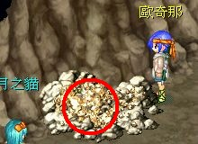 | 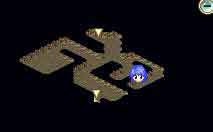 |
| 卡玛那瓦山洞一楼X3962、Y1935，可以拿到─铜矿、锡矿、铅矿、铝矿 | |
| 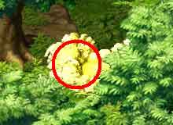 | 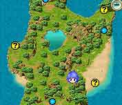 |
| 威灵村外右上X3542、Y3835，可以拿到─灰色黏土、白色黏土、红色黏土、黄色黏土、干掉黏土、黏土 | |
| 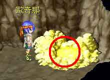 | 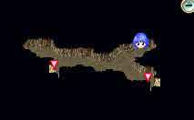 |
| 南北岛相连地道X2442、Y615，可以拿到─黄色黏土、干掉黏土、黏土、石英、硝石 | |